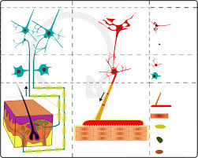
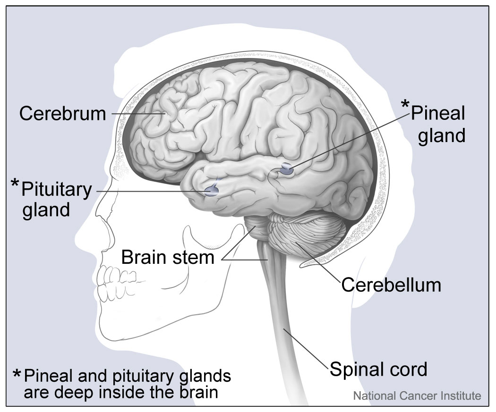
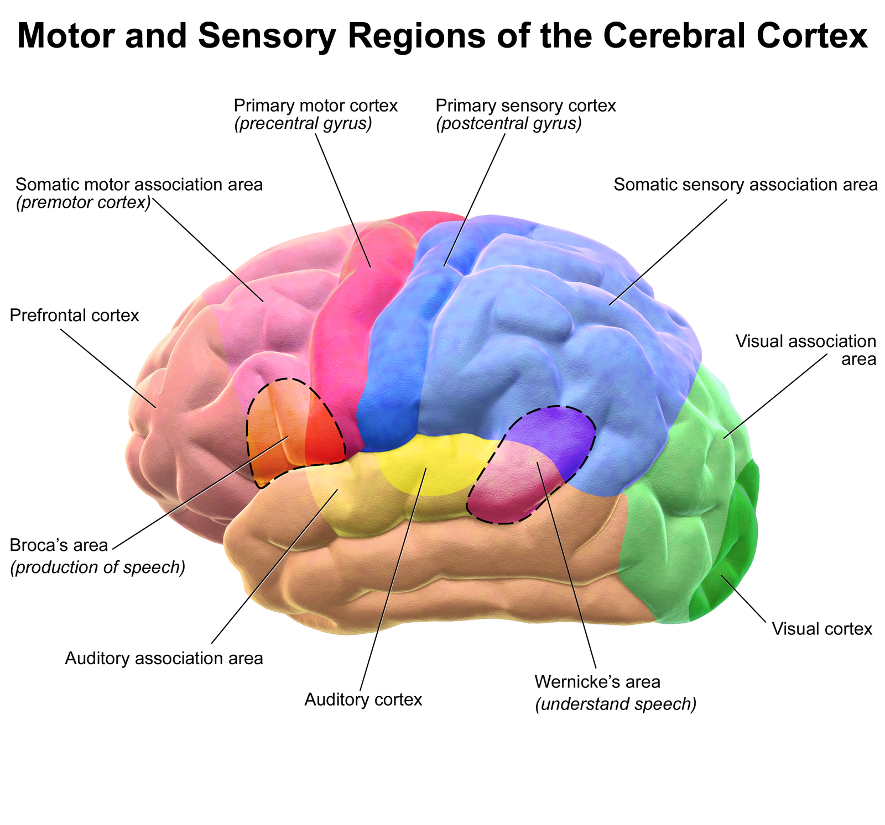
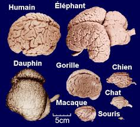
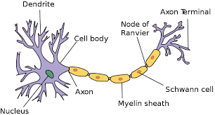
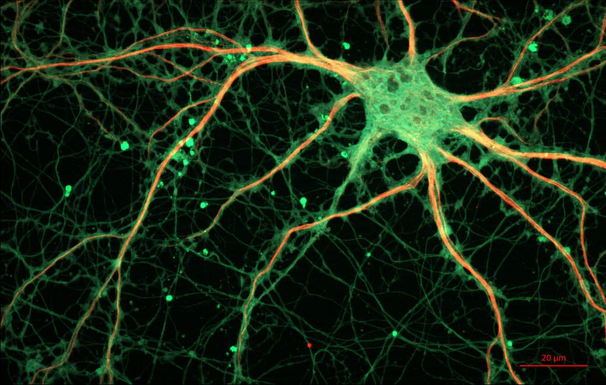

Machine Learning and Neural Networks
Roberto Santana and Unai Garciarena
Department of Computer Science and Artificial Intelligence
University of the Basque Country
Introduction to Neural Networks: Table of Contents
Biological background
Nervous system

- Sensory systems: Collect information from the different body parts (visual, auditory, olfactory, gustatory, thermal, tactile etc. information)
- Motor system: Control movements.
- Brain: Where the greater part of information processing happens.
J. R. Anderson. Cognitive psychology and its implications. WH Freeman/Times Books/Henry Holt & Co. 1990.
Figure: Commons Wikipedia.
{kind=link}
Brain

The brain is the control center of the central nervous system of an animal.
It is responsible for perception, cognition, attention, memory, emotion, and action.
The brain is composed by the cerebrum, the brainstem, and the cerebellum.
T. Lewis. Human Brain: Facts, Functions & Anatomy. 2016.
Figure: Commons Wikipedia.
{kind=link}
Brain
In humans, the cerebrum forms the upper part of the brain.
The brainstem is the posterior part of the brain and provides the main motor and sensory innervation to the face and neck.
The cerebellum lies beneath the cerebrum and has important functions in motor control.
T. Lewis. Human Brain: Facts, Functions & Anatomy. 2016.
Figure: Commons Wikipedia.
Great brains


Great brains
No yet so great brains
Brain organization

The outermost layer of the cerebrum is the cerebral cortex, which consists of four lobes: the frontal lobe, the parietal lobe, the temporal lobe and the occipital lobe.
Frontal lobe: Movement, reasoning, behavior, memory, speaking.
Parietal lobe: Knowing right from left, sensation, reading.
Temporal lobe: Understanding language, behavior, memory, hearing.
Occipital lobe: Vision.
Figure: Commons Wikipedia.
{kind=link}
Biological background
The structure of the neocortex
- It is divided into dozens of regions, each responsible for different cognitive functions.
- Within each region there are multiple layers of neurons, as well as dozens of neuron types.
- The neocortex has around \( 3 \times 10^{10} \) neurons. Only 1 or 2 percent of these neurons are firing at any given instant.
Some facts about the neocortex
- The neocortex is a deeply folded sheet of 2 mm thick that in humans takes up about 75 percent of the brain's volumen.
- Learning, memory formation, motor command generation, all these tasks involve the neocortex.
- The neocortex stores patterns primarily by forming new synapses.
J. Hawkins. What Intelligent Machines Need to Learn From the Neocortex. IEEE-Spectrum. June. Pp. 33-37. 2017.
Brain
The main differences between human and animals brains is their size (relative to body size).

Humans also have more neurons per unit volume than other animals.
The more complicated a brain gets, the more gyri and sulci, or wiggly hills and valleys, it has.
T. Lewis. Human Brain: Facts, Functions & Anatomy. 2016.
Figure: Commons Wikipedia.
{kind=link}
Intelligent behavior is not just human
Learning and intelligence are not displayed just by humans.
Animals exhibit different degrees of intelligent behaviors, e.g., dolphins, rats, crows, chimpazes, etc.
The way animals learn and perform tasks can be used to implement machine learning algorithms.
O. J. Loukola et al. Bumblebees show cognitive flexibility by improving on an observed complex behavior. Science. Pp. 833-836. 2017.
Intelligence it not just about single individuals (with big brains)
Groups of animals work together and display collective intelligent behavior.
Flocks of birds self-organize to avoid predators.
Bees learn from each other in swarms.
In ant colonies ants communicate the paths to food using pheromones.
Neurons
Neuron: A cell that collects and transmits electrical activity.

Soma: The cell body of the neuron, which contains the nucleus.
Dendrites: Short, heavily ramified branches that extend from the cell body.
Axon: A long structure, often covered by a myelin sheath, used by neurons to communicate with each other.
Figure: Commons Wikipedia.
{kind=link}
Neurons
Synapse: The place at which an axon and a dendrite almost touch each other

Releasing neurotransmitters axons can modify the membrane of the receiving dendrite
Synapses that reduce the potential difference are called excitatory, those that increase it are called inhibitory.
The sudden, temporary change of the electrical potential, which is called action potential, propagates along the axon.
Figure: Commons Wikipedia.
{kind=link}
Biological background
Neurons
Information is encoded in the changes in the electrical potential of the neuron's membrane and the number of nerve impulses that a neuron transmits per second ( firing rate ).

Neural coding: Studies how individual neurons and ensembles of neurons encode information.
R. Kruse et al. Computational intelligence: a methodological introduction. Springer. 2016.
Biological intelligence and ML
Why to look at the brain?
- It is still the most powerfull intelligent machine.
- Its inner working has been the inspiration of several AI paradigms.
- Much of work on Neural Networks have been based on inspired in studies of the neurobiological mechanisms.
- Some aspects of he brain mechanisms that support biological intelligence are still largely unexplored in ML approaches.
Biological intelligence and ML
Why to look at the brain?
- Neuromorphic technologies (e.g., SpinNNAker project. ) use the brain as a model to develop computational architectures.
- Subject of ongoing multi-million Euro research projects.
- Blue brain project in Europe. Digitally reconstructing and simulating the brain.
- BRAIN initiative in the US. Accelerating the development and application of innovative technologies.
Biological intelligence and ML
1) Learning by rewiring
- Most learning results from growing new synapses.
- Brains learn fast, incrementally, and continuously.
- A single neuron can learn hundreds of different patterns by creating and activating different sets of synapses.
- Rewiring allows to continuously adding new patterns that do not interphere with each other.
J. Hawkins. What Intelligent Machines Need to Learn From the Neocortex. IEEE-Spectrum. June. Pp. 33-37. 2017.
Biological intelligence and ML
2) Sparse distributed representations (SDRs)
- There are millions of neurons but only a small percentage are active at any given time.
- Each neuron represents a different aspect of a concept.
- SDRs are inherently robust to errors and noise.
- Sets of neuron encoding related concepts overlap.
- Multiple ideas can be simultaneously represented.
J. Hawkins. What Intelligent Machines Need to Learn From the Neocortex. IEEE-Spectrum. June. Pp. 33-37. 2017.
Biological intelligence and ML
3)Enbodiment
- Refers to the use of movement to to learn about the world.
- This does not mean that an intelligent machine needs a physical body, only that it can change what it senses by moving.
- The body as an essential substrate and a constant source for learning.
- The brain receives impulses from the sensory organs which feeds the brain with constantly changing input.
- The neocortex can learn new objects with few movements and sensations.
J. Hawkins. What Intelligent Machines Need to Learn From the Neocortex. IEEE-Spectrum. June. Pp. 33-37. 2017.
Associanism
Definition
- Contiguity: Things or events with spatial or temporal proximity tend to be associated in the mind.
- Frequency: The number of co-occurrences of two events is proportional to the strength of association between these two events.
- Similarity: Thought of one event tends to triggers the thought of a similar event.
- Contrast: Thought of one event tends to triggers the thought of an opposite event.
Mind is a set of conceptual elements that are organized as associations between these elements.
Four laws of association (Aristotle)
Associanism

Thomas Hobbes (1588-1679)
- Complex experiences are association of simple experiences which are associations of sensations.
- Associations exists by means of coherence and frequency as its strength factor.
C. G. Boree. Psychology: the beginnings.
Associanism

David Hartley (1705-1757)
- Memory could be conceived as smaller scale vibrations in the same regions of the brain as the original sensory experience.
- These vibrations act as a material basis for the stream of consciousness.
C. G. Boree. Psychology: the beginnings.